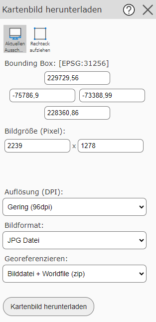
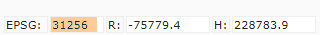

Downloading a Map Image
With this tool, the current map image can be downloaded in JPG or PNG format. Unlike Print, the map image is not embedded in a print layout. Instead, there is the option to additionally create a WorldFile for this image. This allows the map image to be loaded into GI applications (ArcGIS, QGIS, …) and thereby inserted at the correct geographic position. This is also referred to as a georeferenced image.
The tool dialog offers the following options:

In the input fields, the bounding box (extent) and the size of the image in pixels can be specified. The extent must be given in coordinates in the map projection.
The tool offers the following options via the two buttons:
Use Current Map View: The bounding box and size are taken from the current view. If you change the view, the values for the geographic extent and size change as well.
Draw Rectangle: This allows a window to be dragged open on the map. The geographic extent and size are taken from it.
Note
If the Draw Rectangle tool is selected, the map view cannot be panned, because a rectangle is dragged open while the mouse button is held down. To pan the map view, you must switch back to the Use Current Map View tool.
In addition to geographic extent and image size, the following selections can also be made:
Resolution (DPI): Here the quality of the output can be determined. A value of 96 DPI corresponds to the resolution that is also shown on the screen.
Note
If you select a value higher than 96 DPI here, the image becomes larger than the image size in pixels given above. That size refers to 96 DPI. A larger image naturally also requires more storage space. Nevertheless, it can sometimes make sense to choose a higher resolution here, if the map image is, for example, inserted into a document that will later be printed. On a printout, an image with a higher resolution looks sharper.
Image format: JPG (Jpeg) or PNG can be specified as the image format. JPG files have the advantage that they generally require less storage space when the map image contains aerial imagery. For maps without aerial imagery, however, PNG files often produce sharper and smaller results.
Georeference: Here you can choose whether a WorldFile should also be created in addition to the image. If you select this option, the result is a ZIP file containing both the image file (jpg, png) and the WorldFile (jgw, pgw). Otherwise, the image file is downloaded directly.
Note
A WorldFile is a text file containing the coordinates of the upper left corner of the map image, as well as the size of a pixel in the X and Y directions. The coordinates refer to the map coordinate system.
Note
The map coordinate system is shown at the bottom left of the viewer on desktop (EPSG):

If you insert a georeferenced map image into GI software, it will generally ask for the spatial reference system. In that case, the map coordinate system must be specified using the EPSG code shown here.
With Download Map Image, the map image can be downloaded based on the settings.